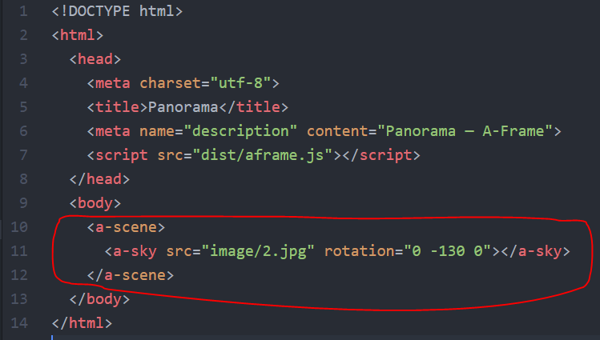

A-Frame Test
Simple test using A-Frame.
View the links below using a browser on your mobile phone with Google Cardboard or the
RICOH cardboard viewer. Gyroscope navigation should work.
These pictures taken with the RICOH THETA at the September 2016
MeetUp in San Francisco.
Basically one line of code.

Fork the code from GitHub.
Note: Suggest you use GitHub Pages to test. It may not work on your local filesystem
unless you run a local HTTP server
due to Cross-Origin Resource Sharing (CORS) errors.
Discussion